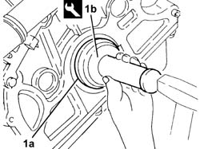
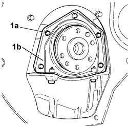
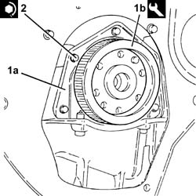
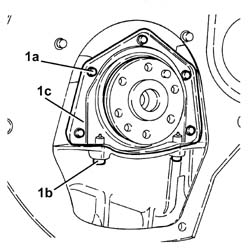
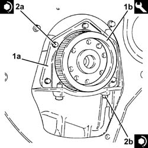

1020D40 flywheel end oil seal- r+r with flywheel removed
- Path
- Procedures > 10 ENGINE > 1020 CRANKCASE SUMP AND COVERS > 1020D oil seals on crank shaft > 1020D40 flywheel end oil seal- r+r with flywheel removed
- Kind
- repair procedure (removal / refitting; the operation number is the code)
- Applies to
- engines: 1.6 TS , 1.8 TS, 2.0 JTS, 2.5 V6, 3.2 V6, 1.9 JTD 8v , 2.0 JTS, 2.4 JTD 10v; all production periods
- Interactive page
- https://sloeber94.github.io/elrnDB-a156/en/#/3237477
Applies to: engines: 2.5 V6, 3.2 V6; all production periods
 Removing
Removing
 Refitting
RefittingRemove the flywheel side oil seal from its housing.
Applies to: engines: 2.5 V6, 3.2 V6; all production periods
Refitting
Removing1. Fit the flywheel side oil seal (1a) using the tool (1b).
 | Name | Country |
|---|---|---|
1b | Fitting tool | 1.821.150.000 |

Applies to: engines: 1.6 TS , 1.8 TS; all production periods
1. Undo the bolts (1a) and remove the flywhell side oil cover (1b) with built in oil seal.

Applies to: engines: 1.6 TS , 1.8 TS; all production periods
1. Fit the flywheel side oil cover with built-in oil seal (1a) using the tool (1b).
| Name | Country |
|---|---|---|
1b | Fitting tool | 1.820.619.000 |
2. Tighten the bolts for the oil cover, flywheel side, to the recommended torque.
 | Fastening | Component | Ø | Value (daNm) |
|---|---|---|---|---|
2 | Bolt | FLYWHEEL SIDE COVER | M6 | 0.8 - 1.0 |

Applies to: engines: 1.6 TS , 1.8 TS; all production periods
Remove the tool.
| Name | Country |
|---|---|---|
- | Fitting tool | 1.820.619.000 |
Applies to: engines: 2.0 JTS, 2.0 JTS; all production periods
Removing
Refitting1. Undo the bolts (1a) and (1b), then remove the flywheel side oil seal cover (1c) with the built in oil seal.

Applies to: engines: 2.0 JTS, 2.0 JTS; all production periods
Refitting
RemovingApply silicon sealant to the matching surfaces between the oil sump and the flywheel side oil seal cover.
1. Place the flywheel side oil cover with the built-in oil seal (1a) back in its housing using the tool (1b).
| Name | Country |
|---|---|---|
1b | Fitting tool | 1.820.619.000 |
2. Tighten the bolts (2a) and (2b) securing the flywheel side oil seal cover to the recommended torque.
| Fastening | Component | Ø | Value (daNm) |
|---|---|---|---|---|
2a | Bolt | CRANKSHAFT REAR COVER | M6 | (Engine crankcase side) 0.8 ÷ 1.0 |
| Fastening | Component | Ø | Value (daNm) |
|---|---|---|---|---|
2b | Front and rear bolt | OIL SUMP | M6 | (Flywheel oil seal cover side) 0.8 ÷ 1.0 |

Applies to: engines: 1.9 JTD 8v , 2.4 JTD 10v; all production periods
1020D30 oil seal cover, fly wheel side - r + r and replace seals